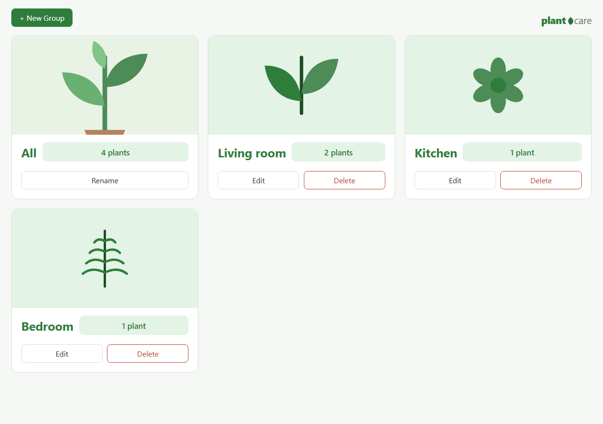
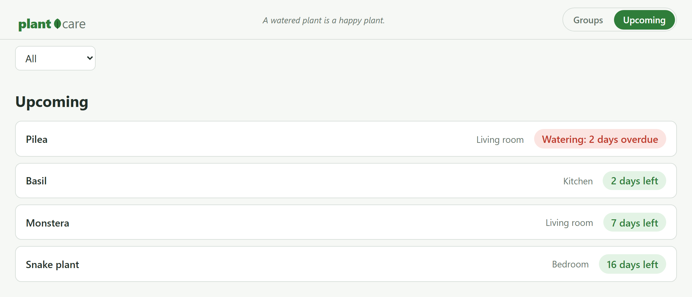
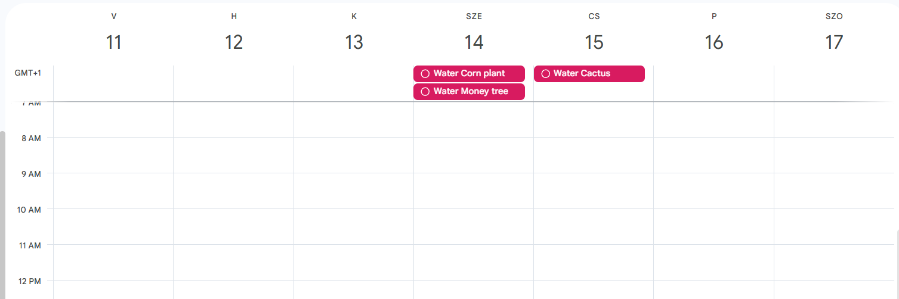
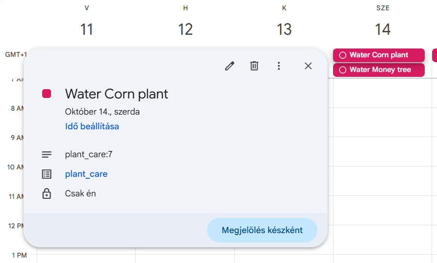
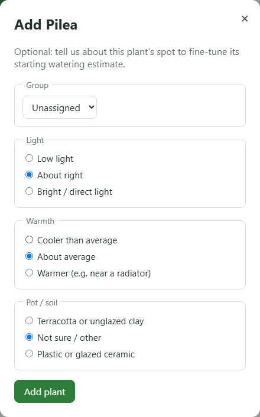
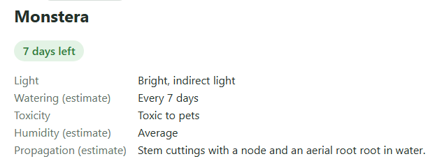

Water your houseplants on the calendar you already check.
A semester project for an Advanced Programming course — a small, real houseplant tracker, built and shipped end to end: FastAPI, HTMX, SQLite.
plant_care keeps track of every houseplant you own: when it was last watered, how long it can go before the next one, and what it actually needs to stay alive. It's for anyone who has killed a plant by forgetting about it, or by watering it exactly as often as every other plant on the windowsill.

The landing page — every room is its own group, with its own cover.
Try the actual interaction
This is running live in your browser, not connected to any server — but it's the exact flow the real app uses when a plant is overdue.
Pilea
How did it go?
Every room's watering, sorted into one list
No need to open each room separately to see what's due. The Upcoming view lists every plant across every room, most overdue first — and it re-sorts the moment you water one. Try it:
- Pilea Living room Watering: 2 days overdue
- Basil Kitchen 2 days left
- Monstera Living room 7 days left
- Snake plant Bedroom 16 days left

The real thing — same sorting as the demo above, and filterable down to a single room.
A reminder on the calendar you already have open
Watering reminders aren't another notification from another app you'll eventually mute. Each plant gets real, all-day Google Calendar to-dos — the same calendar on your phone. Tick one off there, and plant_care picks it up and moves the countdown forward on its own.


A real week from a Google Calendar — these are actual to-dos plant_care created, not a mockup.
A watering estimate that's actually about your plant
Most apps give every Monstera the same number. plant_care starts from three quick questions about where the plant actually sits — its light, the room's warmth, the pot it's in — and then keeps adjusting from what you report after watering: still wet, drooping, or right on time.

Three optional questions at add time — skip them and plant_care falls back to a sensible default instead.
Every plant's full picture
Light, a watering estimate, toxicity, humidity, and a propagation tip — all filled in from a single add, no extra lookups.

Toxicity is the one field that's never a guess — it's copied from the ASPCA's own published classification.
Also in the box
- A plant's photo and short description come straight from Wikipedia the moment you add it — toxicity to pets is the one field pulled from the ASPCA's own list instead, because a wrong guess there matters more than a wrong guess anywhere else.
- Group your plants by room — pick one of 8 built-in cover icons, or upload your own photo for the whole group.
- Upload your own photo for any individual plant too, any time, replacing the automatic Wikipedia one.
- A different plant-care tip greets you at the top of the app every day — the same ten rotating in the header above, which you can also tap through yourself.
How to try it
plant_care runs locally — there's no hosted demo yet. Clone it and run it on your own machine:
git clone https://github.com/esst-prog2/plant_care.git
cd plant_care
python -m venv .venv
# Windows:
.venv\Scripts\activate
# macOS / Linux:
source .venv/bin/activate
pip install -r requirements.txt
python run.pyThen open http://127.0.0.1:8000.